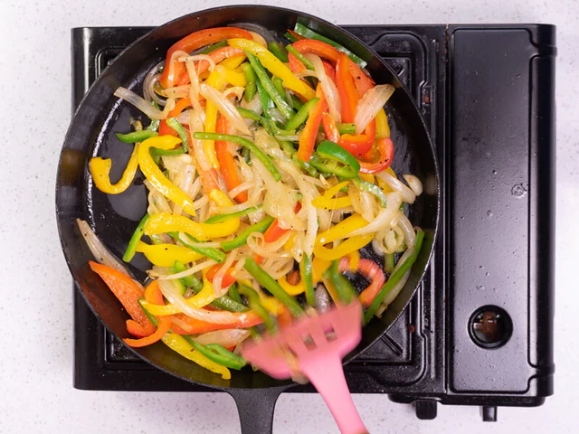
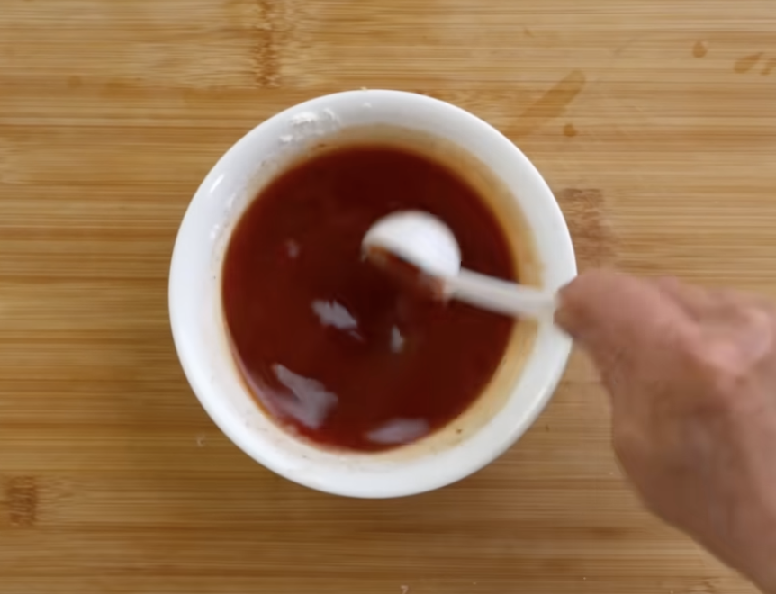

Step 1️⃣: 🍟Deep Fried for the 1st time
- Heat the oil to approximately 160°C
- Add pork and fry over medium heat for about 8 minutes
- Fry until golden brown and then remove from the oil
Not crispy enough
Step 2️⃣: 🥘Deep Fried Again
- Increase oil temperature to approximately 180°C
- Fry for about 40 seconds more
- Remove and set aside
Step 3️⃣: 🍍Fried the Vegetables
- A small amount of oil in the pan
- Add onions, green capcicums, and red bell capcicums
- Add pineapple chunks
- Stir-fry quickly over medium heat

Step 4️⃣: 🍯Sauce
- Pour in the sauce (medium heat)
- Add a small amount of cornstarch slurry
(1-2 tsp at a time) until the sauce thickens and coats
the pork evenly.

Step 5️⃣: 🍲Merge!
- Pour in the fried pork
- Add the stir-fried side dishes
- Stir-fry quickly for about 1 min